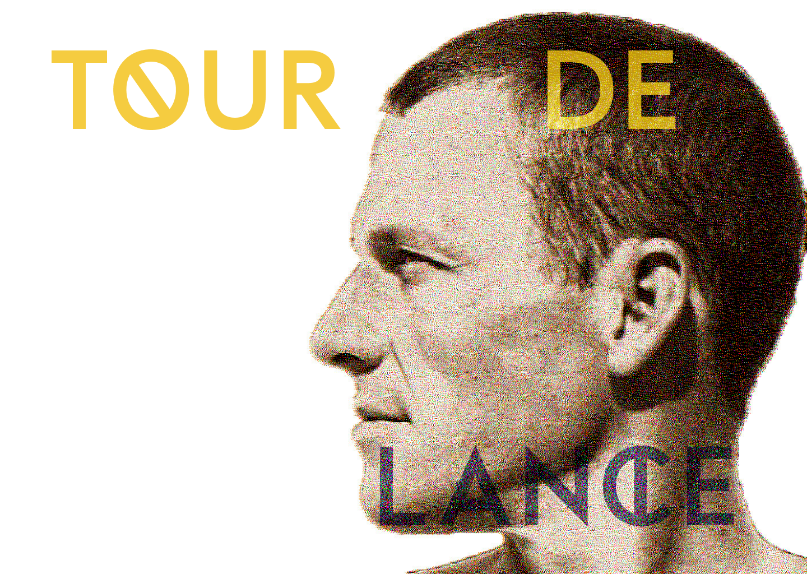

Unmask how the Cycling Legend, Lance Armstrong, once a global icon with millions of fans, shockingly fell from grace, becoming one of the most prominent events in the history of professional sports.
Copyright © Jason Zhao, Interation Foundation FL23